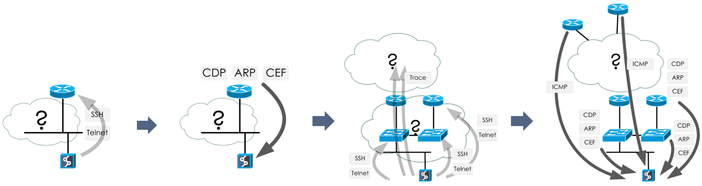

How Discovery Works
Overview
Discovery creates a snapshot of the network, finding all active network infrastructure devices and collecting the current state of network protocols and technologies.
The process is controlled from the discovery tab of the web user interface using the (start) and (stop) buttons.
The timing of the network discovery snapshots can be automated in Settings → Advanced → Snapshots to collect data in periodic intervals or at a specific time. It is recommended to do a network discovery at least once a day to record all network changes.
Connectivity Report
A connection to every attempted address either succeeds or is recorded in the Connectivity Report  which details the reason for the connection failure. The most frequent reason for failure is a timeout of the login attempt. A connectivity report can be useful for troubleshooting failed credentials and other unreachability reasons. An authentication failure messages denote an unsuccessful login attempt and provide a description of how the device has responded.
which details the reason for the connection failure. The most frequent reason for failure is a timeout of the login attempt. A connectivity report can be useful for troubleshooting failed credentials and other unreachability reasons. An authentication failure messages denote an unsuccessful login attempt and provide a description of how the device has responded.
Bandwidth Limit
Bandwidth limit controls the amount of traffic sent to and received from the network infrastructure using bidirectional shaper and application flow control mechanisms. The traffic rate never exceeds the configured limit in either direction, allowing discovery and analysis processes to be run during business hours, thereby not overloading the network infrastructure devices any more than during standard operational procedures.
To further distribute the network load and reduce the possibility of the bottlenecks, the connection scheduler sorts connections attempts to addresses that are farthest away. For example, in a list of addresses 10.10.10.1, 10.10.10.2, 10.20.10.1, 10.10.20.1, after attempting a
connection to 10.10.10.1, the next IP scheduled is 10.20.10.1, because it shares only 11 bits with 10.10.10.1. This lowest common mask rule enables statistically distributing the load without prior topology knowledge.
The selected number of megabits per second also controls the number of simultaneous connections. Each additional megabit adds 3 parallel sessions.
Discovery Process
Discovery is performed via a lightweight interaction with the network infrastructure using CLI management protocols and ICMP probes. If the initial seed is not entered, the discovery mechanism attempts to login to the default gateway and to responders of ICMP probes returning from the traceroute to the 10.0.0.0 network address.

After a successful login, discovery reads the network protocol state tables and looks for known neighbours, such as routing protocol next hops, ARP entries with MAC addresses of supported vendors, and CDP and LLDP neighbour information. A connection attempt is made to each potential network infrastructure device. Traceroute is attempted for each unknown connected router from the discovered networks on the routing table.
This is how the discovery process continues after a successful connection to a network device:
- IP Fabric looks at LLDP/CDP and other neighbor protocols of the discovered device and tries to connect to those devices
-
IP Fabric tries to connect to a next-hop device from the routing table
-
IP Fabric use the device's ARP table to find hosts and other network devices it can connect to with the help of OUI table in IP Fabric (Settings → OUI)
- Traceroute is attempted for each unknown connected router from the discovered networks in the routing table.
Discovery then collects the detailed network state and information from every discovered device for every supported running protocol. All collected data is timestamped at the reading time and the timestamps are used to calculate the rate of change for each element.
Discovery also computes network topology and cross-technology dependencies by using network graph traversals of upstream and downstream paths. A topology for each protocol is computed separately.
A managed network is considered to consist of every discovered device under a coherent administrative domain, as restricted by access credentials, and the full list of devices is available in the inventory.
The spanning-tree domain is a topology of contiguously connected spanning-tree instances and signifies a Layer 2 failure domain in the case of a cascading Layer 2 failure.
The routing domain is a topology of contiguously connected forwarding hops and signifies a Layer 3 failure domain in the case of a cascading Layer 3 failure.